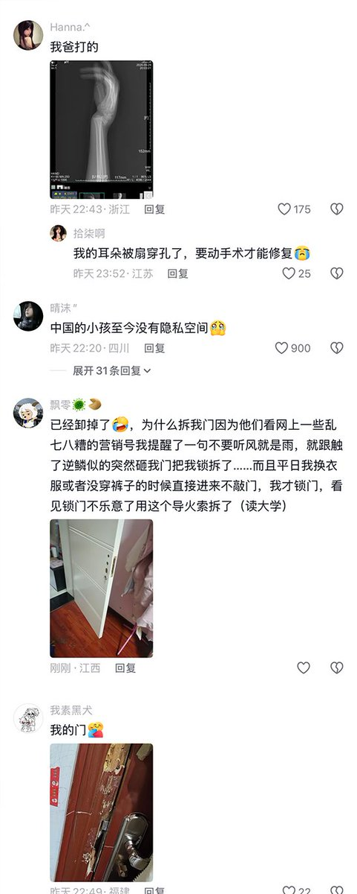
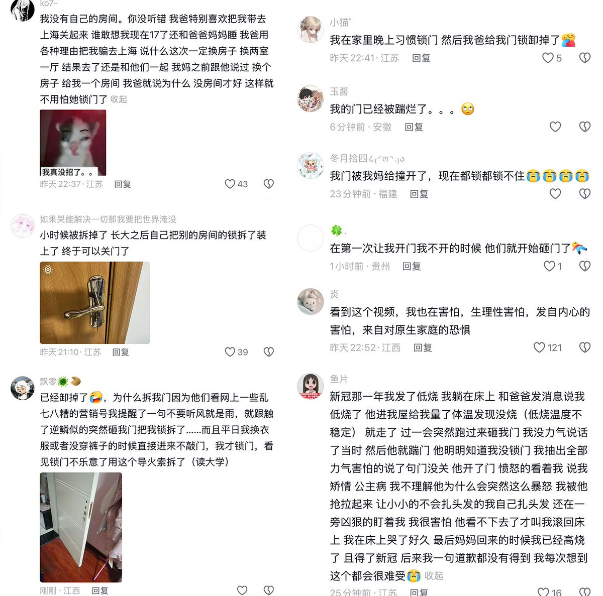
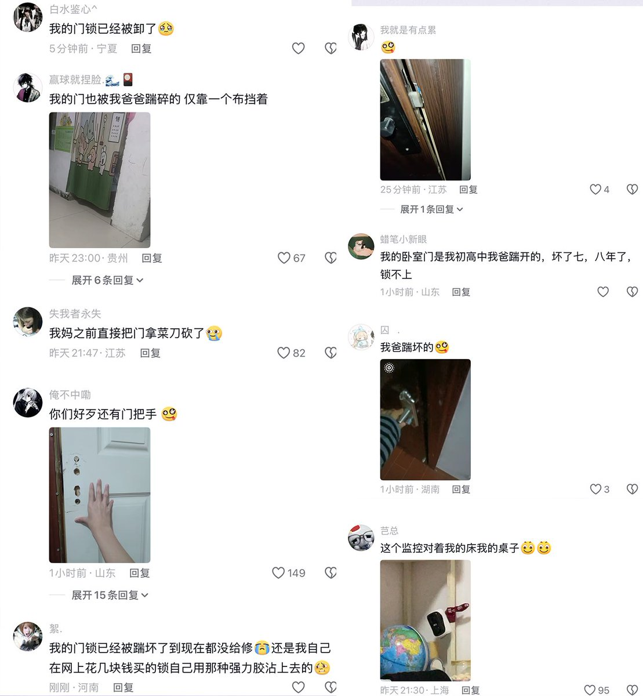

愿晚星照常升起（keep4o）
@tadatsukiei
中国式家庭即人间地狱。
“我要安静，我要独处，我要个人空间”
这是我曾经心中怒吼过无数次的话。



李老师不是你老师
@whyyoutouzhele
3月22日，江苏。一名初中女生只因将房门反锁，便遭到父母的指责。父母不断踹门并敦促她快点打开房门。
女生崩溃哭喊道：我现在不想打开，你们为什么一点时间和空间都不愿给我。我是个人，我有自己的需求，我只想一个人静一点。
父亲继续踹门，大喊：“把门打开，把你的手机平板拿给我” https://t.co/uACy0VDUzI